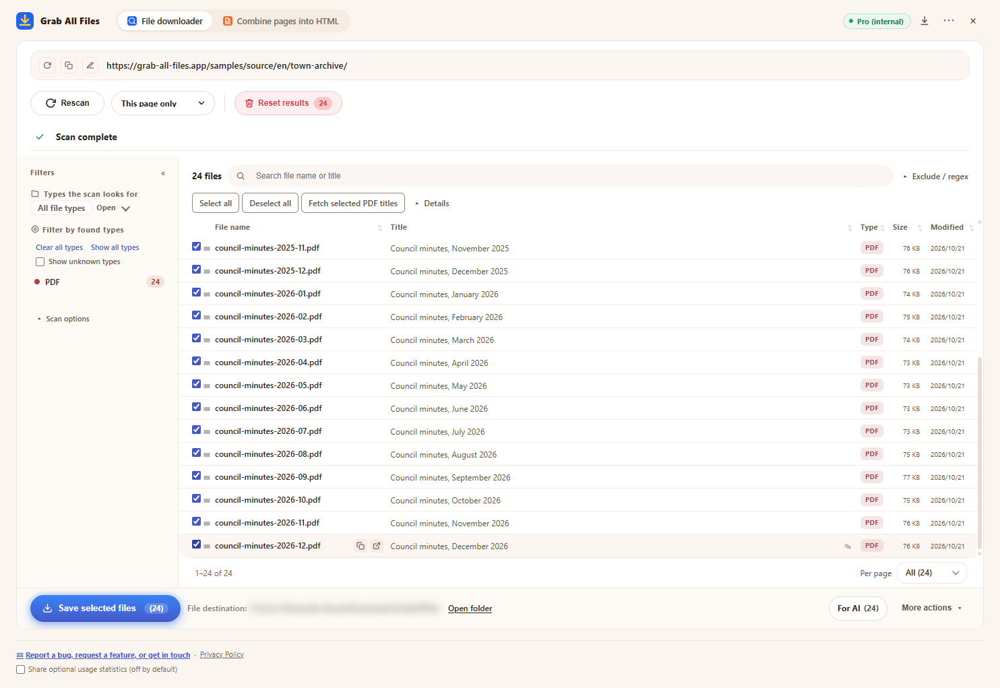

Real output from Grab All Files
24 PDFs downloaded in one run (Pro)
A fictional town’s council minutes archive (one set of minutes per month from January 2025 to December 2026: 24 PDFs) was scanned, all PDFs were selected and saved in one run. Free saves up to 10 files per download, so this would take three runs; Pro has no per-download limit. The file names were given by the extension from each PDF’s title.
Output files
- Council minutes, January 2025.pdf
- Council minutes, February 2025.pdf
- Council minutes, March 2025.pdf
- Council minutes, April 2025.pdf
- Council minutes, May 2025.pdf
- Council minutes, June 2025.pdf
- Council minutes, July 2025.pdf
- Council minutes, August 2025.pdf
- Council minutes, September 2025.pdf
- Council minutes, October 2025.pdf
- Council minutes, November 2025.pdf
- Council minutes, December 2025.pdf
- Council minutes, January 2026.pdf
- Council minutes, February 2026.pdf
- Council minutes, March 2026.pdf
- Council minutes, April 2026.pdf
- Council minutes, May 2026.pdf
- Council minutes, June 2026.pdf
- Council minutes, July 2026.pdf
- Council minutes, August 2026.pdf
- Council minutes, September 2026.pdf
- Council minutes, October 2026.pdf
- Council minutes, November 2026.pdf
- Council minutes, December 2026.pdf
The extension with 24 PDFs selected, just before saving (the save location is blurred)

How it was made
- Source page
- /samples/source/en/town-archive/
- Extension
- Grab All Files 5.8.20
- Browser
- Chrome 155.0.8059.85 (Windows 11)
- Plan
- Pro
- Made on
- 2026-10-21
- Settings
- Link depth: this page only
- File type: PDF only
- Files selected: 24
- Saved to: the browser download folder (GrabAllFiles folder)